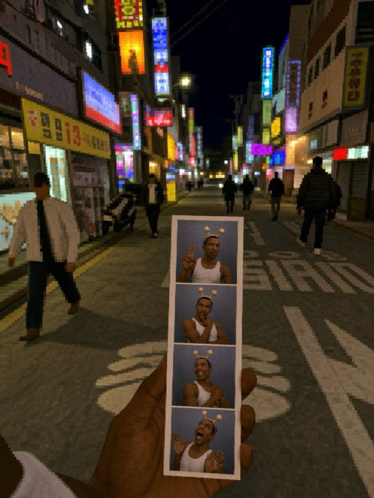
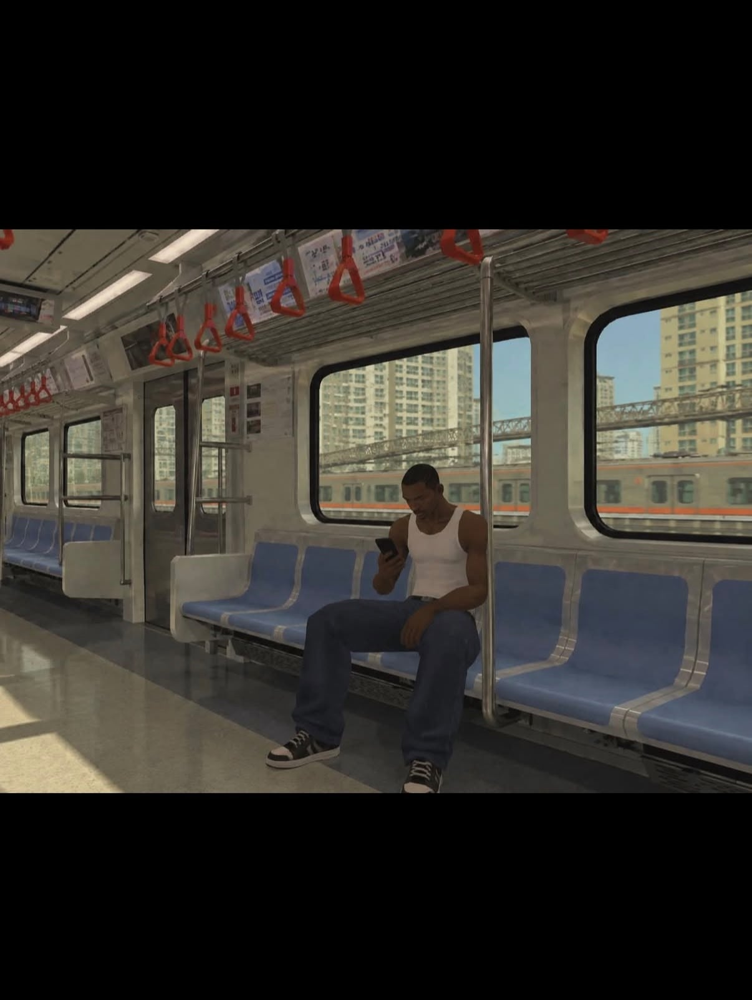
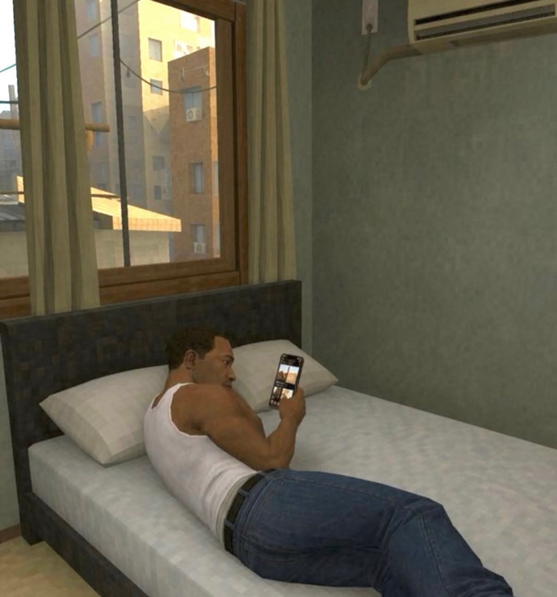
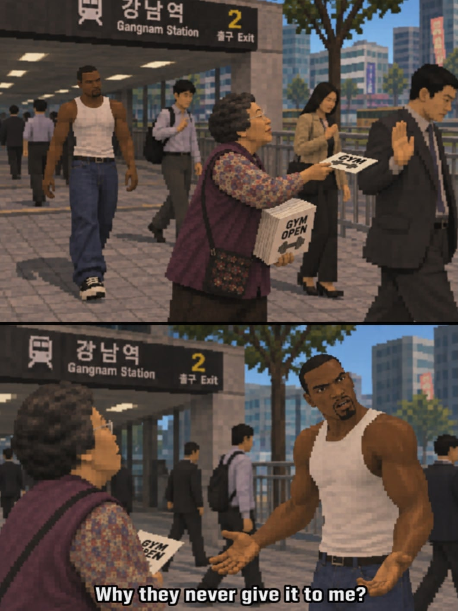
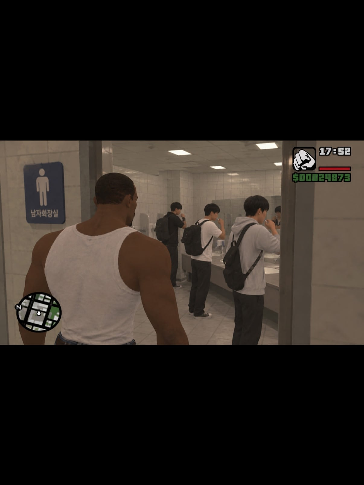

아니씨 존나게 친근하네 진짜 ㅋㅋㅋㅋㅋㅋㅋ
존나 잘 만들었노 ㅎㄷㄷ
얘 누구였더라? gta3 산안 주인공인가?
CJ
클럽녀 존예네
평범한 20~30대 무주택 서울 자취 라이프인데 저거 유지비용이 장난 아님 ㅋㅋㅋ 관악구 투룸 빌라 월세가 이젠 70~80만원 시대임 나도 강서구 1.5룸 하나 갖고 있는데 그거 이번에 87만원에 월세 계약했다 서울 주거비용은 앞으로 계속 상승할거임 불과 10년 전만 해도 서울 "거주" 외국인들이 이렇게 많지 않았는데 지금은 외국인들도 서울 엄청 들어와서 거주비용 올려주고 있어
not again this shit ㅋㅋㅋ
ㅋㅋㅋㅋㅋㅋㅋㅋㅋㅋㅋㅋㅋ
이제야 돌아온거야 CJ~??!
외국인청ㅋㅋㅋㅋㅋㅋㅋㅋㅋ
외국인들한텐 양치질 아무데서나 하는거 극혐이라고 하더라
나도 백화점 화장실 같은 너무 공공장소에서 양치질하는 사람들 보면 기분 안좋긴함
조선말을 쓰고 조선음식을 먹으니 어찌 조선사람이 아니겠는가